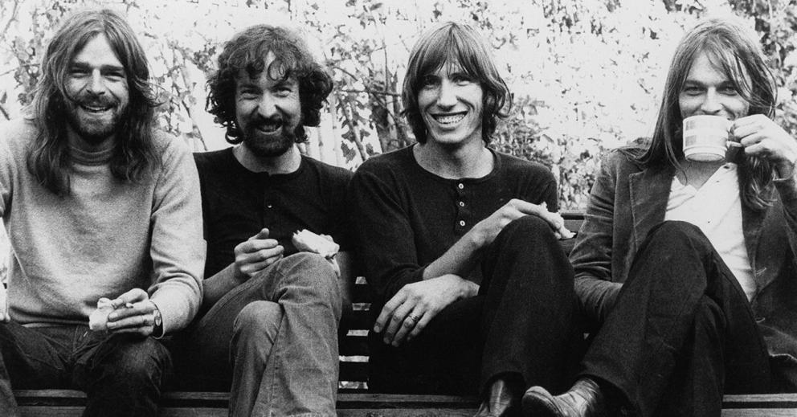

Pink Floyd 1965
Uma banda de rock formada em Londres

Sobre os anos iniciais da banda
Formado em Londres em 1965, o Pink Floyd nasceu da mente brilhante e genial de Syd Barrett (guitarra e vocais), acompanhado por seus colegas de universidade Roger Waters (baixo), Richard Wright (teclados) e Nick Mason (bateria).
O nome da banda surgiu de uma sacada de Barrett, que uniu os nomes de dois de seus músicos de blues favoritos: Pink Anderson e Floyd Council. Diferente do rock tradicional da época, o grupo se tornou o pioneiro do rock psicodélico britânico, misturando experimentações sonoras, letras lúdicas e os primeiros shows com projeções de luzes da história de Londres.
Em 1967, lançaram seu álbum de estreia, o aclamado The Piper at the Gates of Dawn. No entanto, o comportamento cada vez mais instável de Syd Barrett — agravado pelo uso excessivo de LSD — tornou sua permanência insustentável. No final de 1967, David Gilmour foi integrado à banda para cobrir as guitarras e, pouco tempo depois, Barrett se afastou definitivamente. Essa transição dolorosa e complexa forçou o Pink Floyd a se reinventar, abrindo caminhos para as composições profundas e os álbuns conceituais que, anos mais tarde, os transformariam em gigantes da história da música.
"Ticking away the moments that make up a dull day...You fritter and waste the hours in an offhand way.
Kicking around on a piece of ground in your home town, waiting for someone or something to show you the way."
"Preenchendo os momentos que fazem um dia monótono...Você desperdiça as horas de maneira descuidada.
Chutando o chão em um pedaço de terra na sua cidade natal, esperando por alguém ou algo que te mostre o caminho."
Curiosidades da banda
- Mais de 250 milhões de cópias: Esse é o número estimado de discos que a banda vendeu ao redor do mundo desde o seu início.
- O Fenômeno The Dark Side of the Moon: Lançado em 1973, este álbum sozinho já vendeu mais de 50 milhões de cópias.
- O Recorde Absoluto da Billboard: The Dark Side of the Moon detém o recorde de álbum que passou mais tempo na parada Billboard 200.
- Fábrica de Vinil: Na época do lançamento do The Dark Side of the Moon, a demanda era tão bizarra que a fábrica de discos na Alemanha não conseguia dar conta. Reza a lenda que eles imprimiam cópias sem parar, 24 horas por dia.
"We don't need no education
We don't need no thought control
No dark sarcasm in the classroom
Teachers leave them kids alone"
"Nós não precisamos de nenhuma educação
Nós não precisamos de nenhum controle de pensamento
Nenhum sarcasmo ácido na sala de aula
Professores, deixem as crianças em paz"

Você pode conhecer mais da banda clicando aqui